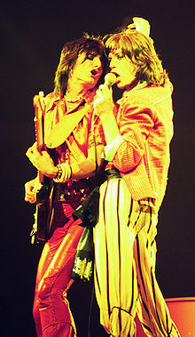
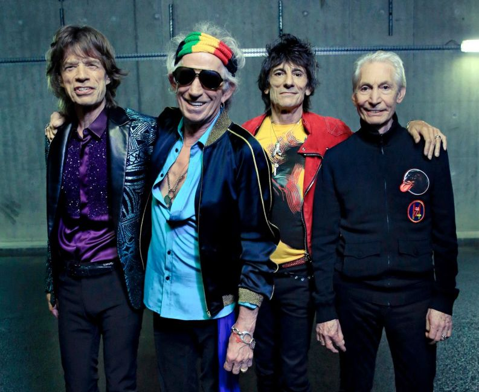

Michael Philip Jagger, beter bekend als Mick Jagger, en Keith Richards hadden al bij elkaar op de kleuterschool gezeten, toen ze elkaar eind jaren vijftig weer tegenkwamen op een treinperron in Dartford in Kent. Jagger en Richards werden goede vrienden en begonnen een bandje, Little Boy Blue and the Blue Boys, met Dick Taylor als bassist. Zij ontmoetten Brian Jones, die een rhythm-and-bluesband aan het oprichten was, waarvoor alleen nog maar toetsenist Ian Stewart gevonden was. Richards, die toen alleen nog maar Chuck Berry-riffs speelde, kreeg dankzij Jones rhythm-and-bluesschema's onder de knie. Dick Taylor (die later The Pretty Things oprichtte) werd bassist en Tony Chapman drummer. Brian Jones noemde zijn band The Rolling Stones, naar het nummer "Rollin' Stone" van Muddy Waters. In deze opstelling begonnen de Stones in 1962 in clubs te spelen en werden ze al snel een sensatie in het Britse clubcircuit. Eind 1962 stapte Dick Taylor uit de band. Tony Chapman stelde Bill Wyman als vervanger voor; met Wyman had hij in de band The Cliftons gespeeld. Wyman werd aangenomen, naar verluidt vanwege zijn goede versterker. Begin 1963 werd Chapman vervangen door Charlie Watts. Oorspronkelijk is hij een jazzdrummer. Andrew Loog Oldham werd aangesteld als manager en die vond Stewart niet bij het ruige imago van de band passen. Stewart bleef echter wel aan als roadie en verscheen live regelmatig bij de Stones op het podium tot aan zijn dood in 1985.
In 1963 kreeg de groep een platencontract bij Decca Records en kwam de eerste single uit, Come on, een cover van Chuck Berry, gevolgd door de tweede single I Wanna Be Your Man, dat John Lennon en Paul McCartney speciaal voor de Stones hebben geschreven. Beide singles haalden de Britse hitparade, de Top Twenty, die in de jaren zestig elke zondagavond op Radio Luxembourg te beluisteren viel.
In 1964 werd de single Not Fade Away uitgebracht, een cover van Buddy Holly, die een vrij grote hit werd. Toen Radio Caroline op 199 meter op Pasen 29 maart 1964 om 12 uur Engelse tijd als eerste zeezender 3 mijl voor de Engelse zuidoostkust vanaf een zendschip startte met de officiële uitzendingen, werd dit nummer als eerste gedraaid.
Nog in hetzelfde jaar volgde het debuutalbum The Rolling Stones. Ook openden The Rolling Stones in dat jaar de eerste uitzending van Top of the Pops, met de single I Wanna Be Your Man. Vervolgens werd het album 12 × 5 uitgebracht, met de hits Time is on my Side, It's All Over Now en Chuck Berry's Around and Around. De opvolger van 12 × 5 is: The Rolling Stones, Now!, een succesvol album met de hitsingle Heart of Stone. Als deel van hun 3rd British Tour traden de Stones op 8 augustus 1964 voor het eerst in Nederland op, in het Kurhaus in Scheveningen. De uitzinnige fans en de hard optredende politie zorgden ervoor dat de Stones al tijdens het vijfde nummer het optreden moesten staken. Van de slotminuten en het commentaar van impresario Paul Acket ("Van m'n leven niet meer") maakte de toenmalige diskjockey Willem van Kooten geluidsopnamen. Het programma Andere Tijden maakte in september 2011 een verslag van ruim 27 minuten.[2] De schade aan het Kurhaus zou slechts 20.000 gulden hebben bedragen. De toegangsprijs voor de 1500 bezoekers was destijds 7 gulden en de gage voor de Stones 1300 gulden.
In september 1965 kwam het nieuwe album Out of our Heads uit. Alleen de in de VS uitgebrachte versie van het album bevat de superhit (I Can't Get No) Satisfaction. Dit is waarschijnlijk het bekendste nummer van de Stones. In Nederland kwam Satisfaction in augustus 1965 uit op single en het werd meteen een hit. Keith Richards verzon de bekende riff toen hij (slaap)dronken was. Hij nam deze op een eenvoudige cassetterecorder op en ging weer slapen. Ook werd er in 1965 een tournee door Europa gemaakt, waarbij The Rolling Stones niet in Nederland kwamen. Zij stonden tijdens hun European Tour 66 voor de tweede maal in Nederland op het podium op 26 maart 1966 in de Brabanthallen in Den Bosch.
In 1966 kwam Aftermath uit, dat een van hun succesvolste albums zou worden. Het bevat de hits Under My Thumb, Lady Jane, Mother's Little Helper, Out Of Time (nog datzelfde jaar een nummer 1-hit voor Chris Farlowe) en Stupid Girl. Under my Thumb werd een van de grootste hits van de Stones. Dit is tevens het eerste album dat volledig door het duo Jagger/Richards is geschreven.
Rond deze tijd werd het gebruik van lsd populair. Hieruit kwamen twee wat meer donkere albums voort, waarvan Their Satanic Majesties Request psychedelische rock genoemd kan worden. Vele Stonesfans vonden dat album te veel geïnspireerd op Sgt. Pepper's Lonely Hearts Club Band van The Beatles. Het eerste album, Between The Buttons, bevat het bekende nummer Yesterday's Papers. Tevens staan op de Amerikaanse versie de hits Ruby Tuesday en Let's Spend the Night Together. Ruby Tuesday werd in 1970 door Melanie gecoverd en een hit voor haar. Het nummer Connection van dat album heeft Richards gebruikt op een solotournee met de X-Pensive Winos in 1989.
Het hele jaar 1967 (en daarna) werden Brian Jones, Mick Jagger en Keith Richards met drugsprocessen vervolgd, waarbij de politie-inval op het feest van Keith Richards op zijn landgoed Redlands, waar verschillende drugs en een naakte Marianne Faithfull werden aangetroffen, wel het beruchtste incident was. Richards zei later over deze periode: "Wij hebben nooit problemen met drugs gehad, alleen met de politie." De lentetournee door Europa in 1967 werd gekenmerkt door vele relletjes en werd door Bill Wyman omschreven als de wildste Stonestournee ooit. Het in de zomer van 1967 uitgebrachte We Love You was een nummer 1-hit in Nederland.
Richards' heroïneverslaving begon waarschijnlijk rond de tijd van het uitbrengen van het album Their Satanic Majesties Request. Dit album werd in de VS al goud op de dag van de uitgave en bracht alleen al in de VS binnen de eerste tien dagen 2 miljoen dollar op in de verkoop. Dat is meer dan de Beatles' Magical Mystery Tour. Het album bevat de hits She's A Rainbow en 2000 Light Years From Home. Op het album staat ook het nummer In Another Land, dat door Wyman is geschreven, gezongen en geproduceerd. Het nummer 2000 Man werd in 1979 door de Amerikaanse glamrockband Kiss gecoverd op hun album Dynasty. Een andere band die door dit Stonesalbum werd geïnspireerd, is de Amerikaanse neopsychedelische rockband The Brian Jonestown Massacre, die als eerbetoon aan deze plaat hun eigen tweede album uit 1996 Their Satanic Majesties' Second Request noemde.
Aan het nummer Sympathy for the Devil werd heel erg lang gewerkt en het kwam uit in 1968 op de plaat Beggars Banquet. Het is een van hun bekendste nummers. Ook stond hier nog de hit Street Fighting Man op. Beggars Banquet wordt tot op de dag van vandaag gezien als een van de beste rockalbums van de jaren zestig.
In de lente van 1969 werd Brian Jones door de andere Stones ontslagen, omdat ze dat jaar weer in de VS wilden toeren, maar voor Jones geen visum konden krijgen. Hij werd een aantal weken daarna dood gevonden op de bodem van zijn zwembad. In 2006 werd over zijn dood en de weken die eraan voorafgingen een film gemaakt: Stoned.
Eerst kwam Ry Cooder in aanmerking als vervanger van Brian Jones en hij speelde dan ook op een aantal nummers mee, zoals Sister Morphine en Memo from Turner (later uitgegeven als solosingle van Mick Jagger). Hij kon het echter niet vinden met Keith Richards en deze laatste weigerde nog langer bij The Rolling Stones te blijven als Ry Cooder lid van de band zou worden.
Als vervanger werd Mick Taylor aangetrokken, een gitarist met veel talent. Eerst speelden de Stones een gratis concert in Hyde Park in Londen. Aan het eind van hun legendarische tournee door de VS van 1969 werd Let It Bleed uitgebracht. Dit album werd grotendeels opgenomen toen Brian Jones nog officieel bij de Stones zat en op Midnight Rambler en You Got the Silver is hij dan ook nog te horen. Alleen op de nummers Country Honk en Live With Me speelt de nieuwe gitarist Mick Taylor mee. Op dit album staan verder de hits You can't always get what you want en Gimme Shelter.
De jaren zeventig begonnen goed met het in 1970 uitgebrachte livealbum Get Yer Ya-Ya's Out!, nog opgenomen in de jaren zestig tijdens de laatste Stonestournee door de VS van dat decennium en een mooi voorbeeld van de sfeer die de Stones in de jaren zestig omringde. Dit album wordt nog altijd als het beste officiële livealbum van de Stones beschouwd en is tevens het laatste album dat de Stones voor Decca uitbrachten. Het in 1971 uitgebrachte studioalbum Sticky Fingers is het eerste met het bekende Rolling Stones Records-logo van de uitgestoken tong. Het werd een groot succes met als grote hit Brown Sugar. Andere hits zijn Dead Flowers, Wild Horses en Bitch.
Met Exile on Main St. (1972) werd opnieuw een succesvol album uitgegeven. Het dubbelalbum bevatte de hits Tumbling Dice en Happy (gezongen door Keith Richards). Het album staat op de zevende plaats in een door het muziekblad Rolling Stone samengestelde lijst van de vijfhonderd beste albums aller tijden en er staan naast de hits ook klassiekers op als Rocks Off en Shine a Light. De officiële naam van het album is Exile on Main St. Op het livealbum Stripped (1995) staan vooral nummers van dit album.
De opvolger van Exile on Main St. werd het album Goats Head Soup, dat de grote hit Angie bevatte. Het nummer gaat over Angie Bowie, destijds de vrouw van David Bowie, met wie Jagger een relatie heeft gehad, en werd een van hun grootste successen. Een andere kleine hit van het album is Star Star (ongecensureerde titel: Starfucker).
Als opvolger kwam er nog een album uit, It's Only Rock 'n Roll (1974), met de gelijknamige hitsingle. Mick Taylor had het gevoel dat voor de Stones het einde nabij was. Keith Richards kwam vrijwel niet meer opdagen in de studio. Om elkaar te ontlopen brachten de bandleden tussen opnamesessies zo veel mogelijk tijd in het buitenland door.
Taylor keek al ruim een jaar uit naar een nieuwe tour, toen in oktober 1974 tijdens een bijeenkomst in Zwitserland werd besloten dat dit – vanwege de drugsverslaving van Keith Richards – voorlopig uitgesloten was. Afgezien van zijn fragiele conditie waren er problemen met het verkrijgen van verschillende visa voor Richards, vanwege zijn veroordelingen voor drugsbezit. Aangeslagen door dit nieuws, verliet Taylor de bijeenkomst voortijdig. Hij was met name teleurgesteld doordat de tournee hem steeds in het vooruitzicht was gesteld tijdens de bijzonder moeizaam verlopen studiosessies. Twee maanden later bezocht hij een feest ter gelegenheid van de verjaardag van Clapton, waar Mick Jagger ook aanwezig was. Die avond gaf hij aan Mick Jagger te kennen dat hij besloot de band te verlaten.
Richards werd gearresteerd vanwege het in bezit hebben van heroïne. Na een lange rechtszaak werd hij veroordeeld tot het geven van een benefietconcert voor blinden.
Tijdens de tournee van 1975 was Ron Wood tweede gitarist, destijds nog tijdelijk. Wood was namelijk ook nog lid van The Faces.
Iedereen dacht dat de Stones geen albums meer zouden uitbrengen, maar in 1976 werd het mede door reggae geïnspireerde Black and Blue uitgebracht. Het bevat twee singles (Fool to Cry en Hot Stuff). In de zomer van 1976 stonden The Rolling Stones wekenlang tegelijk, en elkaar afwisselend, op nummer 1 en 2 in Nederland met Black and Blue en het compilatiealbum Stones Story. Als vervanger voor Taylor werd gekozen uit diverse gitaristen, onder wie Steve Marriott van Humble Pie en Ron Wood. Richards had de voorkeur voor Marriott, maar Wood werd uiteindelijk onder druk van Jagger gekozen als de nieuwe gitarist.
Om de jaren zeventig af te sluiten werd eind 1978 het album Some Girls uitgegeven. Het bevat de hits Miss You en Beast of Burden. Met dit album zetten de Stones zich weer helemaal op de kaart. Het klinkt anders dan de voorgaande albums, door invloed van country (op Far Away Eyes), disco (Miss You), punk (When the Whip Comes Down) en hardrock (Respectable en Before They Make Me Run). Verder bevat het album ook gewoon ouderwetse rock. Deze schijf is nog steeds het bestverkochte Stones-studioalbum ooit.
Begin jaren tachtig kickte Richards definitief af van de drugs, en kon hij zich weer op muziek gaan richten. Op het album Emotional Rescue staan de hits She's so Cold en Emotional Rescue. Ook begonnen de Stones nu echte videoclips te maken in plaats van de gebruikelijke liveopnames.
In 1981 kwam Tattoo You uit. Het bevat de hits Start Me Up en Waiting on a Friend. De opname voor de nummers Tops, Waiting on a Friend en Start Me Up werden gemaakt voor het album Goats Head Soup, maar werden toen niet goed genoeg gevonden. Hier begonnen de ruzies tussen Jagger en Richards, want Jagger heeft het album deze naam gegeven zonder Keith te informeren. Het had eigenlijk gewoon Tattoo moeten heten. Tattoo You is na Some Girls het bestverkochte studioalbum van de Stones.
In 1983 kwam Undercover uit, met de kleine hit Undercover of the Night.
In 1984 tekenden The Rolling Stones onder leiding van Jagger een nieuw platencontract. Hij vertelde Keith niet dat hij ook een solocontract had getekend. Jagger dacht namelijk dat hij met een solocarrière meer kon verdienen. Keith werd hier boos over en ging ook aan andere projecten werken. Zo speelde hij samen met Chuck Berry en Aretha Franklin. Op de uitnodiging voor Live Aid reageerden de Stones niet eens, maar toen Jagger, wiens albums She's the Boss en Primitive Cool sterk tegenvielen, een spectaculair optreden regelde op Live Aid met Tina Turner en Hall & Oates, traden Keith en Ronnie daar ook op, met Bob Dylan.
De Stones kwamen weer bij elkaar voor het album Dirty Work (1986), maar Jagger en Richards hadden nog steeds ruzie en schreven de meeste nummers afzonderlijk. Het album bevatte de hit (cover) Harlem Shuffle. Ook One Hit (to the body) werd een kleine hit.
Bill Wyman was het ondertussen zat bij de Stones en besloot te vertrekken. Hoewel hij dit besluit al in 1988 had genomen, kondigde hij uiteindelijk pas in januari 1993 zijn vertrek aan.[5] Het laatste studioalbum waarop hij meespeelde is Steel Wheels (1989), met de hit Mixed Emotions, die in Amerika op nummer 5 belandde. Vooral de twee tournees na dit album, de Steel Wheels Tour (1989-1990) en de Urban Jungle Tour (1991), waren succesvol en vernieuwend (zogenaamde arenaconcerten). Bill Wyman werd vervangen door Darryl Jones, die echter geen officieel lid van de Stones is.
Met Darryl Jones werd een nieuw album opgenomen getiteld Voodoo Lounge. Het werd een succes, met de hits Love is Strong en You got me Rocking. Ook de opvolger Bridges to Babylon (1997) werd een succes. Anybody seen my Baby werd eindelijk weer eens echt een grote hit. Ook Flip the Switch, Saint of Me en Out of Control waren succesvol.
In 2002 werd er een compilatiealbum uitgebracht genaamd Forty Licks. Het bevat de meeste hits van de Stones en er staan ook nog een aantal nieuwe nummers op. Don't Stop werd een hit. Ook hierop volgde een succesvolle tournee, de Licks Tour 2002, die de Stones onder andere door Nederland voerde.
In 2006 werd er een nieuw studioalbum uitgebracht: A Bigger Bang. De bijbehorende tournee was de langste (2005-2007) en lucratiefste van de Stones ooit. Ze reisden door Europa, Azië en de Verenigde Staten. In 2006 werd er ook nog een gratis concert op het strand van Copacabana in Rio de Janeiro gegeven, waarbij naar schatting tussen de anderhalf en twee miljoen toeschouwers aanwezig waren.
The Rolling Stones live met Amy Winehouse in 2007 In 2008 brachten de Stones in samenwerking met Martin Scorsese een bioscoopfilm uit: Shine a Light. Deze film bevat een concert uit 2006 met gastoptredens van Buddy Guy, Jack White (van The White Stripes) en Christina Aguilera, en enkele oude interviews.
Begin 2008 kwam er een eind aan het zestienjarige platencontract dat de Stones hadden met EMI en Virgin. Zij sloten een nieuw contract met Universal met op 1 april 2008 als eerste uitgave de soundtrack van Shine a Light.
In mei, juni en juli 2009 verschenen heruitgaven van alle studioalbums vanaf 1971 tot en met 2005, op een label van Universal Music, Polydor. Ook werd er voor de fans een boxset ontworpen waarin alle 14 cd's bewaard kunnen worden. Het album Exile On Main Street uit 1972 verscheen in 2010 opnieuw in verschillende versies en werd tevens aangevuld met tien niet eerder uitgebrachte nummers uit die periode. Het album stond voor het eerst sinds 38 jaar weer op nummer 1 in verschillende albumlijsten over de hele wereld. Een van de "nieuwe" nummers van Exile is Plundered My Soul.
Vanaf begin 2009 speculeerden fans en media er weer wild op los en werd beweerd dat de Stones eind 2011 weer op tournee zouden gaan met een nieuw studioalbum. In januari 2010 werden de geruchten officieel ontkracht.[6] Op 2 september 2009 doken er op een Australische muzieksite geruchten op over het vertrek van Charlie Watts uit de band. Ook deze geruchten werden door de band ontkend.
Op 25 juli 2010 (de dag voor de 67e verjaardag van Mick Jagger) stonden er in "The Sun" opnieuw geruchten dat de band zou hebben aangekondigd in 2012 te stoppen, 50 jaar na de oprichting. De geruchten werden wereldwijd overgenomen. Volgens "bronnen" zou deze beslissing zijn genomen omdat de Stones beseffen dat ze een dagje ouder worden. Bovendien zouden ze een punt achter hun carrière willen zetten "op hun hoogtepunt". De band zou nog een afscheidstournee geven.[7] Officieel heeft de band niet gereageerd, maar in een interview in de Volkskrant van 24 september 2010 ontkende Ron Wood het gerucht. Hij betwijfelde zelfs of de bandleden ooit wel eens zouden stoppen.[8] Ook Charlie Watts zou in een Franse krant gezegd hebben dat er van stoppen geen sprake is, maar dat de band niet meer jaren vooruit zal plannen.